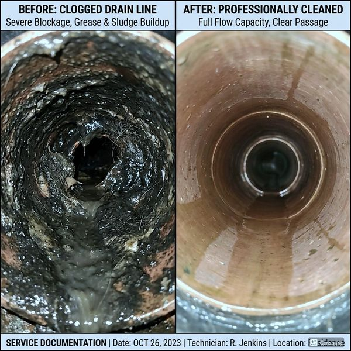
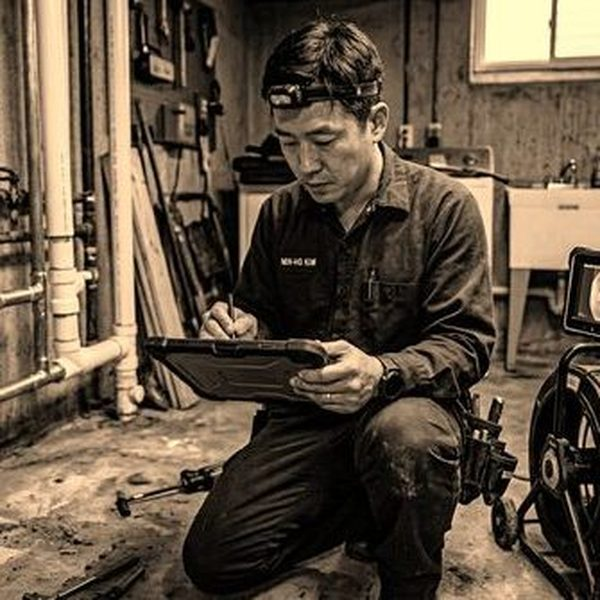
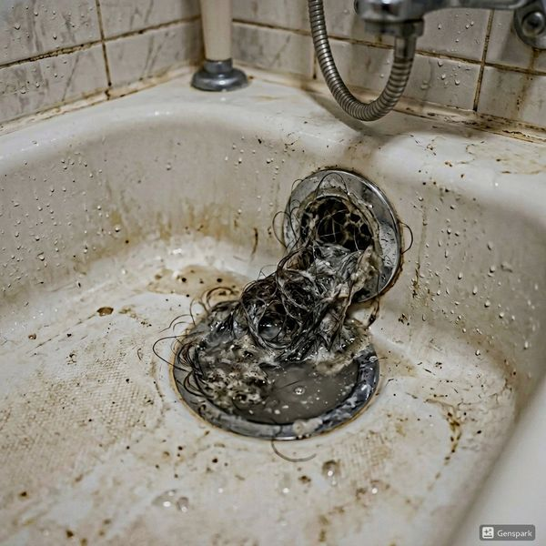

노후 아파트 배관 교체가 필요한 시점
아파트 배관의 수명은 재질에 따라 다르지만, 일반적으로 아연도금강관은 15~20년, PVC 배관은 25~30년, 스테인리스 배관은 40년 이상입니다. 20년 이상 된 아파트에서 녹물이 나오거나, 수압이 현저히 떨어지거나, 배수 시 '꾸르륵' 소리가 자주 나면 배관 교체를 고려해야 합니다. 특히 아연도금강관을 사용한 1990년대 이전 아파트는 내부 스케일(물때)이 배관 단면의 50% 이상을 막고 있는 경우가 흔합니다. 제우스시설관리에서 내시경 카메라로 진단하면 교체 필요성을 정확히 판단할 수 있습니다.

배관 리모델링 비용과 공사 절차
일반적인 아파트(30평 기준) 전체 배관 교체 비용은 급수관 300~500만원, 배수관 400~700만원 수준입니다. 부분 교체는 구간당 50~150만원입니다. 공사 기간은 전체 교체 시 5~7일, 부분 교체는 1~2일 소요됩니다. 공사 절차는 ①내시경 진단 → ②견적 산출 → ③기존 배관 철거 → ④신규 배관 설치 → ⑤누수 테스트 → ⑥마감 복구 순으로 진행됩니다. 제우스시설관리는 무료 현장 진단과 투명한 견적을 제공하며, 28분 내 출동하여 신속한 상담이 가능합니다.

자주 묻는 질문
Q. 아파트 배관 교체 시 입주민 동의가 필요한가요?
A. 공용 배관(수직관)은 입주민 2/3 이상의 동의가 필요하며, 전용 배관(세대 내)은 개별 진행이 가능합니다.
Q. 배관 교체 중 수도 사용이 가능한가요?
A. 교체 구간에 따라 다르지만, 보통 공사 당일 4~8시간 단수됩니다. 사전에 생활용수를 준비해 두시면 됩니다.